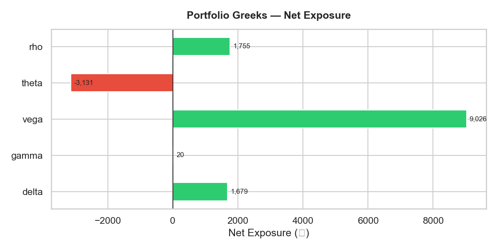
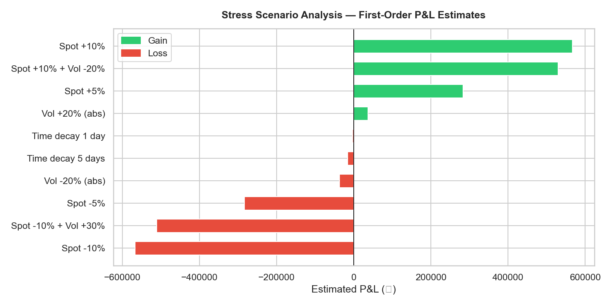
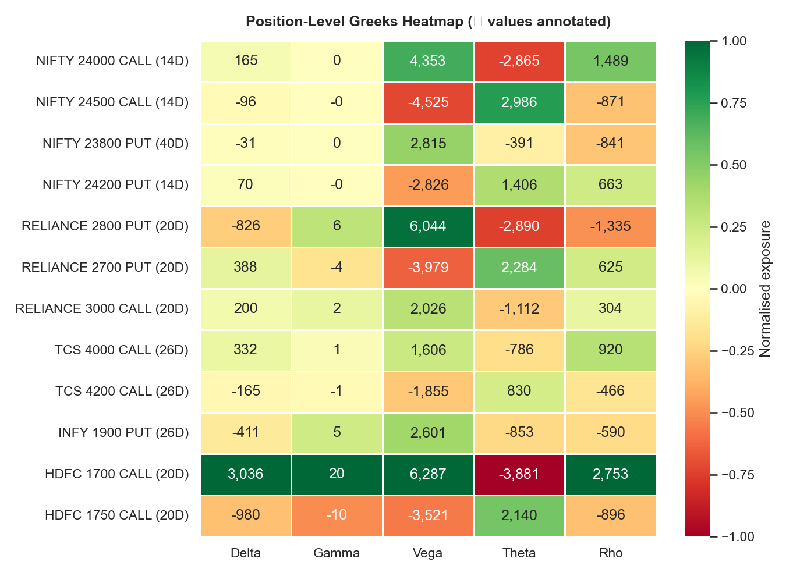

Motivation
At Morgan Stanley's Trading Risk Management desk I monitor options portfolios daily — tracking Delta, Gamma, Vega, Theta across multi-leg positions and understanding how the book behaves under market stress. That workflow lives in proprietary systems. I built this project to replicate it from first principles: starting from the Black-Scholes formula and building up to a complete risk monitoring tool.
The goal was to produce something interviewers could look at and immediately recognise as the same analytics they use in production — not textbook exercises but a realistic risk monitoring pipeline for an NSE/BSE options book.
What It Does
| Module | Capability |
|---|---|
| bsm.py | Black-Scholes-Merton pricing + all five Greeks per option |
| portfolio.py | Loads a portfolio CSV, scales Greeks by quantity × lot size, flags concentration risk |
| risk_metrics.py | Historical VaR, parametric (delta-normal) VaR, 10 named stress scenarios |
| report.py | 4 charts: Greeks bar, stress waterfall, P&L distribution, position heatmap |
Methodology
Black-Scholes-Merton Pricing
Every option is priced using the closed-form BSM formula. Given spot price S, strike K, time to expiry T (in years), risk-free rate r, and implied volatility σ:
d₂ = d₁ − σ · √T
Call price = S · N(d₁) − K · e^(−rT) · N(d₂)
Put price = K · e^(−rT) · N(−d₂) − S · N(−d₁)
The Five Greeks
Gamma (Γ) = N'(d₁) / (S · σ · √T) — rate of change of Delta
Vega (ν) = S · N'(d₁) · √T / 100 — per 1% change in implied vol
Theta (Θ) = [−S·N'(d₁)·σ / 2√T − r·K·e^(−rT)·N(d₂)] / 365 — per calendar day
Rho (ρ) = K · T · e^(−rT) · N(d₂) / 100 — per 1% change in risk-free rate
Each Greek is computed per contract and then scaled by quantity × lot size to give actual portfolio-level exposure in rupee terms.
Value at Risk
Two approaches are implemented and compared:
- Historical VaR: 252-day simulated daily P&L (delta approximation), 5th percentile = 95% VaR
- Parametric VaR: Delta × Spot × Daily Vol × z-score × √horizon. Faster but ignores non-linearity — treated as a lower bound.
Stress Scenarios
Ten named shocks are applied using first-order approximation (Delta × ΔS + Vega × Δσ):
- Spot ±5%, Spot ±10%
- Vol +20% (absolute), Vol −20%
- Time decay: 1 day, 5 days
- Combined: Spot −10% + Vol +30% (worst case), Spot +10% + Vol −20% (best case)
Output — Sample Portfolio (12 NSE Positions)
Portfolio Greeks (net exposure):
Delta +1,679 · Gamma +19.6 · Vega +9,026 per 1% vol · Theta −3,131 per day




Risk Flags
Two automated checks run on every portfolio load:
- Delta concentration: any position whose absolute Delta exceeds 20% of total portfolio Delta is flagged. In the sample book, HDFC 1700 Call holds 45% of portfolio Delta — a meaningful concentration.
- Gamma near expiry: positions with significant Gamma and fewer than 7 days to expiry are flagged for pin risk — spot can rapidly cross the strike, causing large Delta swings.
How to Run
cd options-risk-engine
pip install -r requirements.txt
python run_demo.py
Charts are saved to ./output/. The portfolio CSV is fully editable — swap in any NSE/BSE options positions.